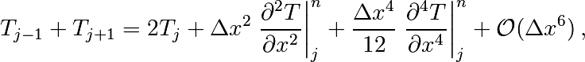
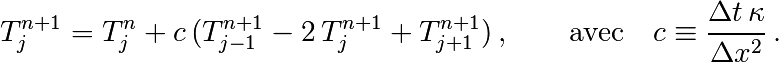

4. Équations aux dérivées partielles : utilisation de NumPy¶
On trouve dans le module NumPy les outils de manipulation des tableaux pour le calcul numérique
- Nombreuses fonctions de manipulation de tableaux
- Bibliothèque mathématique importante
Il s’agit d’un module stable, bien testé et relativement bien documenté.
http://docs.scipy.org/doc/ http://docs.scipy.org/doc/numpy/reference/
Pour l’importer, on recommande d’utiliser
>>> import numpy as np
Toutes les fonctions NumPy seront alors préfixées par np.
4.1. Introduction rapide à NumPy¶
Le module NumPy permet la manipulation simple et efficace des tableaux
>>> x = np.arange(0,2.0,0.1) # De 0 (inclus) à 2 (exclus) par pas de 0.1
>>> x
array([ 0. , 0.1, 0.2, 0.3, 0.4, 0.5, 0.6, 0.7, 0.8, 0.9, 1. ,
1.1, 1.2, 1.3, 1.4, 1.5, 1.6, 1.7, 1.8, 1.9])
>>> np.size(x) # Sa taille
20
>>> x[0] # Le premier élément
0.0
>>> x[1] # Le deuxième élément
0.10000000000000001
>>> x[19] # Le dernier élément
1.9000000000000001
>>> x[20] # Pas un élément !
Traceback (most recent call last):
File "<stdin>", line 1, in <module>
IndexError: index 20 is out of bounds for axis 0 with size 20
>>> a = np.array ([[1,2,3], [4,5,6], [7,8,9]])
>>> a
array([[1, 2, 3],
[4, 5, 6],
[7, 8, 9]])
>>> b = 2 * a # Multiplication de chaque terme
>>> c = a + b # Sommation terme à terme
>>> np.dot(a, b) # Produit de matrices
array([[ 60, 72, 84],
[132, 162, 192],
[204, 252, 300]])
>>> a * b # Produit terme à terme
array([[ 2, 8, 18],
[ 32, 50, 72],
[ 98, 128, 162]])
On peut facilement effectuer des coupes dans un tableau numpy. Cette fonctionnalité est particulièrement importante en calcul scientifique (comme nous allons le voir) pour éviter l’utilisation de boucles.
>>> t = np.array([1,2,3,4,5,6])
>>> t[1:4] # de l'indice 1 à l'indice 4 exclu !!!ATTENTION!!!
array([2, 3, 4])
>>> t[:4] # du debut à l'indice 4 exclu
array([1, 2, 3, 4])
>>> t[4:] # de l'indice 4 inclus à la fin
array([5, 6])
>>> t[:-1] # excluant le dernier element
array([1, 2, 3, 4, 5])
>>> t[1:-1] # excluant le premier et le dernier
array([2, 3, 4, 5])
Pour extraire des sous-parties d’un tableau numpy, on a vu qu’on peut faire de l’indexation simple t[0] et des coupes t[1:3]. Une autre possibilité très pratique est de sélectionner certaines valeurs d’un tableau grâce à un autre tableau de booléens (un “masque”), de taille compatible avec le tableau d’intérêt. Cette opération s’appelle de l’indexation par masque
>>> a = np.arange(6)**2
>>> a
array([ 0, 1, 4, 9, 16, 25])
>>> a > 10 # le masque, tableau de booleens
array([False, False, False, False, True, True], dtype=bool)
>>> a[a > 10] # une maniere compacte d'extraire les valeurs > 10
array([16, 25])
Attention à la copie de tableau !
Pour un scalaire on a le comportement “intuitif” :
>>> a = 1.0
>>> b = a
>>> b
1.0
>>> a = 0.0
>>> b
1.0
Pour un tableau NumPy, par defaut on ne copie que l’adresse du tableau (pointeur) pas son contenu (les deux noms correspondent alors aux mêmes adresses en mémoire).
>>> a = zeros((2, 2))
>>> b = a
>>> b
array([[ 0., 0.],
[ 0., 0.]])
>>> a[1, 1] = 10
>>> b
array([[ 0., 0.],
[ 0., 10.]])
Pour effectuer une copie des valeurs, il faut utiliser .copy()
>>> c = b.copy()
>>> c
array([[ 0., 0.],
[ 0., 10.]])
>>> b[1, 1] = 0
>>> b
array([[ 0., 0.],
[ 0., 0.]])
>>> c
array([[ 0., 0.],
[ 0., 10.]])
Remarque : la même chose s’applique aux coupes :
>>> a = np.arange(10)
>>> b = a[:5]
>>> a[0] = 10
>>> b
array([10, 1, 2, 3, 4])
Le module NumPy comporte beaucoup de fonctions qui permettent de créer des tableaux spéciaux, manipuler des tableaux, de faire des opérations sur ces tableaux, etc.
>>> a = np.arange(10)
>>> np.sum(a)
45
>>> np.mean(a)
4.5
Application : calcul de pi
Nous reprenons ici un exemple de la section précédente, en utilisant uniquement des tableaux et des fonctions de NumPy
>>> x, y = np.random.random((2, 100000))
>>> x.shape, y.shape
((100000,), (100000,))
>>> mask = x**2 + y**2 < 1 # quart de disque
>>> np.mean(mask) # fraction des points dans le disque
0.78474999999999995
>>> np.pi / 4
0.7853981633974483
4.2. Équation de la chaleur 1D¶
4.2.1. Discrétisation en différences finies¶
On va s’intéresser dans un premier temps à l’équation de la chaleur (diffusion thermique) en une dimension d’espace
on considèrera les conditions aux limites suivantes
On va chercher à discrétiser ce problème pour en chercher une solution approchée.
La discrétisation la plus simple que l’on puisse envisager (aux différences finies s’écrit)
que l’on peut re-écrire
Cela s’implémente très simplement en Python, par exemple sous la forme
for j in range(1, NX - 1):
RHS[j] = dt * K * (T[j - 1] - 2 * T[j] + T[j + 1]) / (dx**2)
for j in range (1, NX - 1):
T[j] += RHS[j]
4.2.2. Convergence¶
En introduisant un développement de Taylor, on peut estimer la qualité de l’approximation numérique (évolution de l’erreur en fonction de et ).
En écrivant
et en sommant les expressions pour et , on a

donc
Un calcul similaire en temps permet d’estimer l’erreur “de troncature” associée à notre schéma discret
On peut essayer de vérifier numériquement que le schéma utilisé est bien d’ordre deux en espace
Pour cela on va effectuer une boucle extérieure sur la résolution et mesurer une norme de l’erreur entre la solution calculée et la solution analytique
scale = np.exp(-4*(np.pi**2)*K*Time)
TO = np.sin(2*np.pi*x)
DDX[k] = dx
ERR[k] = max(abs(T-TO*scale))
On constate que le schéma semble bien être d’ordre 2 en espace, mais que le calcul devient insupportablement long.
C’est qu’en fait ce code est mal écrit car il ne tire pas profit des possibilités de calcul vectoriel offertes par NumPy.
Pour cela il faut remplacer les lignes
for j in range(1, NX - 1):
RHS[j] = dt * K * (T[j - 1] - 2 * T[j] + T[j + 1]) / (dx**2)
for j in range (1, NX - 1):
T[j] += RHS[j]
par des instructions vectorielles (les “boucles” sont alors gérées par du code compilé et non par du code interpreté)
RHS[1:-1] = dt * K * (T[:-2] - 2 * T[1:-1] + T[2:]) / (dx**2)
T += RHS
On constate que l’execution est alors quasi-instantanée.
4.2.3. Formulation matricielle¶
Que se passe t’il si on pousse l’analyse vers de plus petits pas d’espace ???
On est de fait limité par un critère de stabilité.
Pour une résolution spatiale fixée, celui-ci nous impose donc un nombre minimum d’iterations pour atteindre un temps donné.
On peut cependant chercher à obtenir directement la solution du problème stationnaire
Considérons le système modifié avec terme source (pour éviter une solution stationnaire triviale)
On a alors la solution stationnaire en résolvant
Pour cela il faut donc résoudre un système linéaire
qui peut s’écrire, avec nos conditions aux limites ( en et ) sous forme matricielle (avec la convention de Python pour les indices, i.e. de 0 à N-1) :
Pour résoudre ce problème en Python, on peut définir une matrice creuse (tridiagonale).
- Pour cela on utilise le format de matrices creuses de SciPy ::
- import scipy.sparse as sp
- Ainsi que le solveur associé::
- from scipy.sparse.linalg.dsolve import spsolve
- On peut alors définir le problème aux différences finies::
- data = [np.ones(N), -2*np.ones(N), np.ones(N)] # Diagonal terms offsets = np.array([-1, 0, 1]) # Their positions LAP = sp.dia_matrix((data, offsets), shape=(N, N))
et utiliser le solver inclus dans SciPy :
f = -np.ones(N) * dx**2
T = spsolve(LAP, f)
Remarque : la même approche pourrait être utilisée pour l’équation d’évolution en temps en utilisant le schéma implicite

4.3. Équation de la chaleur 2D¶
On peut traiter le problème équivalent en deux dimensions d’espace

de la même manière, avec un schéma explicite en temps
Ce qui devient en Python:
for n in range(0, NT):
RHS[1:-1, 1:-1] = dt * K * ( (T[:-2, 1:-1] - 2 * T[1:-1, 1:-1] + T[2:, 1:-1]) / (dx**2) \
+ (T[1:-1, :-2] - 2 * T[1:-1, 1:-1] + T[1:-1,2:]) / (dy**2))
T[1:-1,1:-1] += (RHS[1:-1, 1:-1] + dt * S)
Pour résoudre directement la solution stationnaire en 2D, en revanche le système linéaire est plus difficile à formuler.
La température dépend à présent de deux indices et  .
.
Pour formuler le problème sous la forme
il faut numéroter les sous la forme d’une grand vecteur et utiliser le produit de Kronecker
LAP2 = sp.kron(LAP, I1D) + sp.kron(I1D,LAP)
il ne reste alors qu’à résoudre le système linéaire
T = spsolve(LAP2,f2)
et à transformer le résultat (qui est un vecteur de taille NxN) sous la forme d’une matrice de taille (N,N)
T.reshape(N,N)
- Le code complet est disponible ci-dessous :
- [Python source code]
Exercice: Une équation d’onde en deux dimensions
Modifiez l’exemple d’intégration en temps explicite de l’équation de la chaleur en deux dimensions (vu ci-dessus)
pour traiter (toujours en deux dimensions) l’équation d’ondes suivante
de la même manière, on peut écrire un schéma explicite en temps
On pourra considérer une condition initiale sous la forme d’une gaussienne stationnaire.
Correction...
Le code complet est disponible ci-dessous : [La solution...]